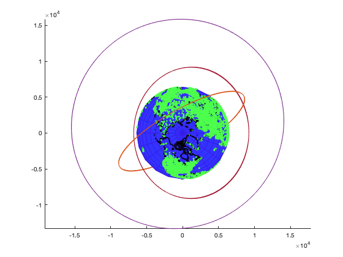

Contents
House keeping
clc clear all close all
Variables
Appearence
E_col = [.2 .2 1]; % Earth's color [0 1 1] C_col = [.3 1 .3]; % Cities' color [1 0 0] Co_col = 'k'; % Coastline's color numCities = 41001;% Number of cities to plot || MAX 41001 || % Constants filename = 'example_constellation.json'; J2 = 1.08263e-3; mu = 398600.4418; %[km3 s-2] Re = 6378; %[km] tstep = 30; %[sec]
Part 1 -- read in a JSON constellation design file
[num_launches, num_spacecraft, satellite_list] = loadConstellation(filename);
Part 2 -- propagate the constellation in time for a full mean solar day
for i=1:num_spacecraft for j=0:tstep:86400 unit = j/tstep; x(unit+1,:) = propagateState(satellite_list(i).oe0,j,0,mu,J2,Re)'; end satellite_list(i).orbits = x; %Stores orbit position and velocity into satellite_list satellite_list(i).r_sc = [x(:,1),x(:,2),x(:,3)]; end
Part 4 -- plot a 3D rendering of your constellation orbits and the Earth
hold on axis equal % Plot Satellite Orbits for i=1:num_spacecraft plot3(satellite_list(i).orbits(:,1),satellite_list(i).orbits(:,2),satellite_list(i).orbits(:,3)); end % Plot Planet S = oblateSpheroid; %3D object S.SemimajorAxis = Re+21; %Make bulge around equation S.SemiminorAxis = Re; [xP,yP,zP] = ellipsoid(0,0,0,S.SemimajorAxis,S.SemimajorAxis,S.SemiminorAxis); h = surf(xP,yP,zP); set(h,'edgecolor',E_col+[.01 -.1 -.1],'facecolor',E_col) % Plot Cities cities = readmatrix('worldcities.xlsx'); citylat = cities(1:numCities,3); citylon = cities(1:numCities,4); [xC,yC,zC] = geodetic2ecef(S, citylat, citylon, 0,'degrees'); scatter3(xC,yC,zC,4,C_col,'.'); % Plot Coastlines load coastlines [xL,yL,zL] = geodetic2ecef(S, coastlat, coastlon, 0,'degrees'); plot3(xL,yL,zL,'color',Co_col,'LineWidth',2); hold off
Part 3 -- compute the number of spacecraft in line of sight of each city
r_site=[xC,yC,zC]; elevation_limit = deg2rad(15); info = zeros(2880,41001); for i=1:2880 for j=1:41%001 for k=1:num_spacecraft info(i,j) = info(i,j) + testLoS(r_site(j,:),satellite_list(k).r_sc(i,:),elevation_limit); end end end